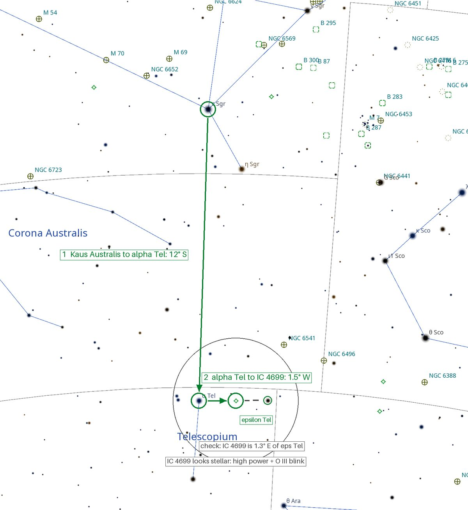
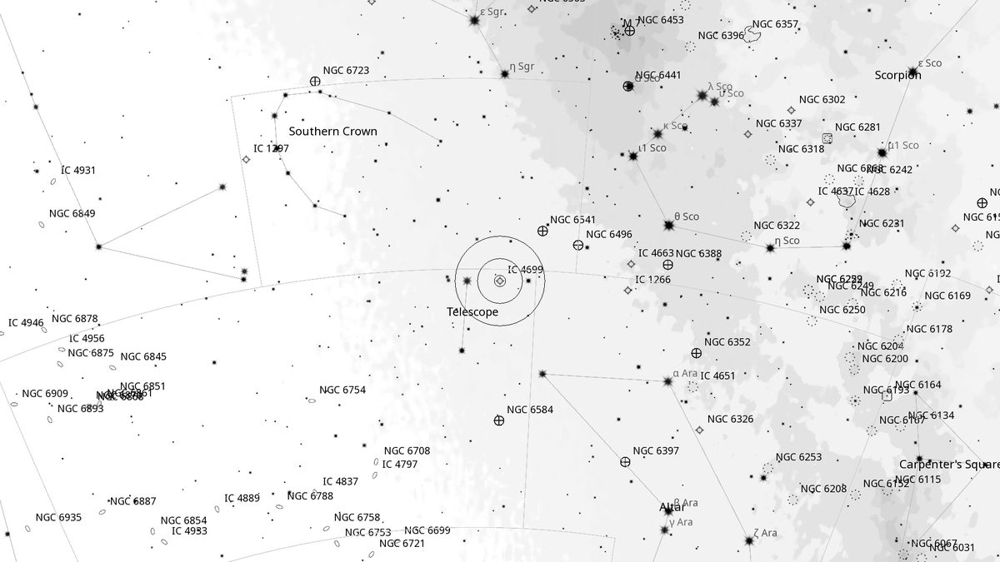
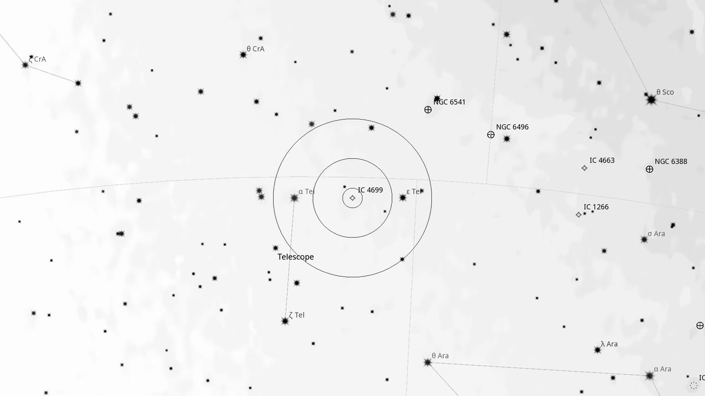
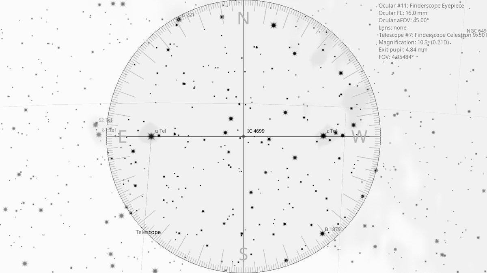
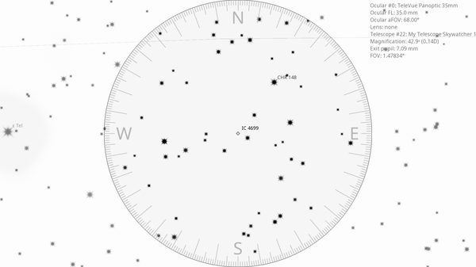

IC 4699 (PN)
Planetary Nebula in Telescopium
| R.A. | Dec. | Size | Mag | SB | Class | Type | Distance | Chart |
|---|---|---|---|---|---|---|---|---|
| 18h 18m 31.2s | -45° 59′ 09.0″ | 5″ | 13.0 | 6.2 | -- | PN | -- | -- |

Source: POSS-2 UK Schmidt Red (STScI) | Field: 10′ × 10′
Interactive Sky View
Loading interactive sky view…
Powered by Aladin Lite / CDS, Strasbourg.
Pan, zoom, or switch surveys using the layer icon.
Background
IC 4699 is a tiny planetary nebula in Telescopium — only ≈5” across, so at low power it is indistinguishable from a 13th-magnitude field star. It also carries the designations Hen 2-383 and PK 348-13.1. The way in is an O III filter held between eye and eyepiece and flicked in and out: the nebula holds its brightness while the true stars around it fade. Once found, high magnification should show a small disk rather than a point. Gaia's parallax for the central star is too uncertain to give more than “many thousands of light-years”.
My Observing Notes
(Not yet observed)
Charts

Star hop — green arrows are the route, grey dashed lines are cross-checks, grey circle is the 9×50 finder field. North up, east left.

Ultra-wide view (~25° field)

Wide-field view with Telrad rings (4°, 2°, 0.5°)

Finderscope view (9×50 RACI, ~4.4° TFOV)

Eyepiece view — 35 mm Panoptic on 12-inch f/5 (1.6° TFOV)